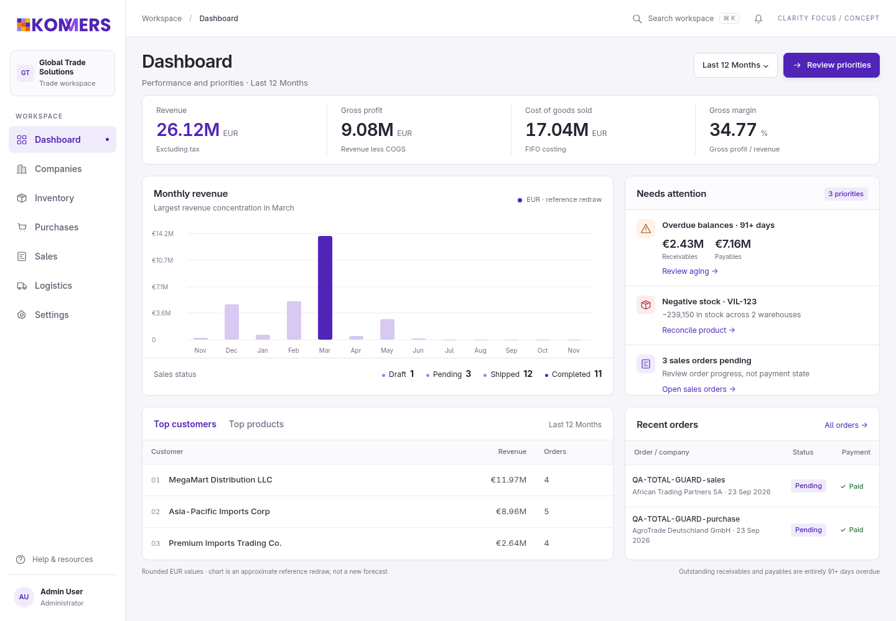
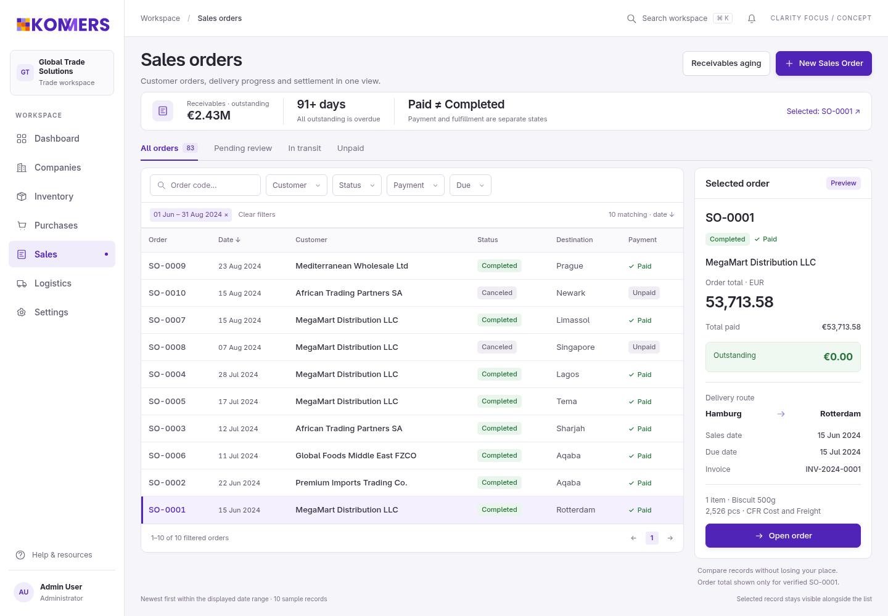
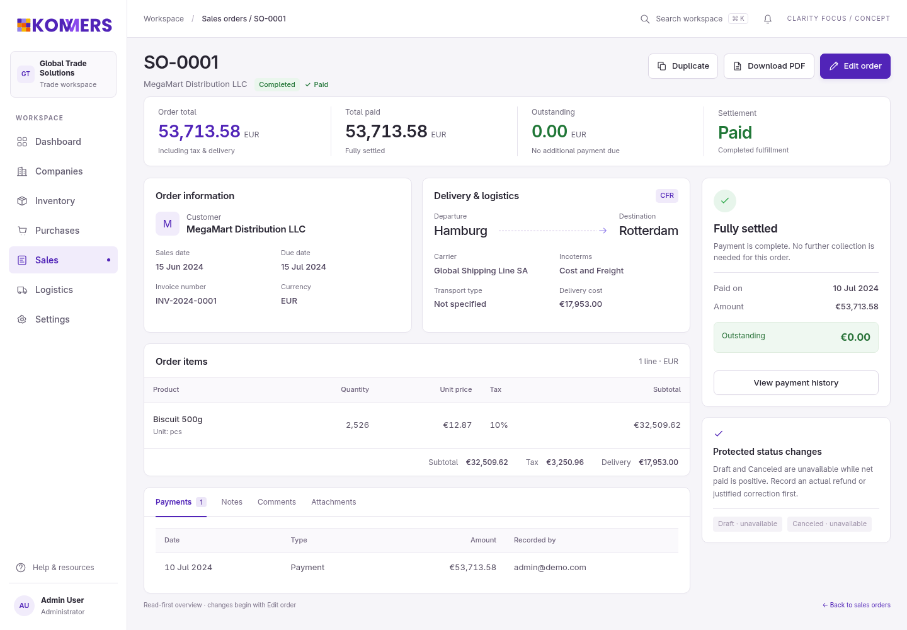
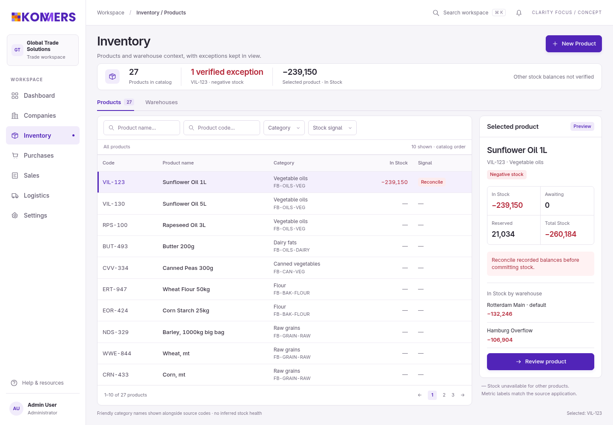
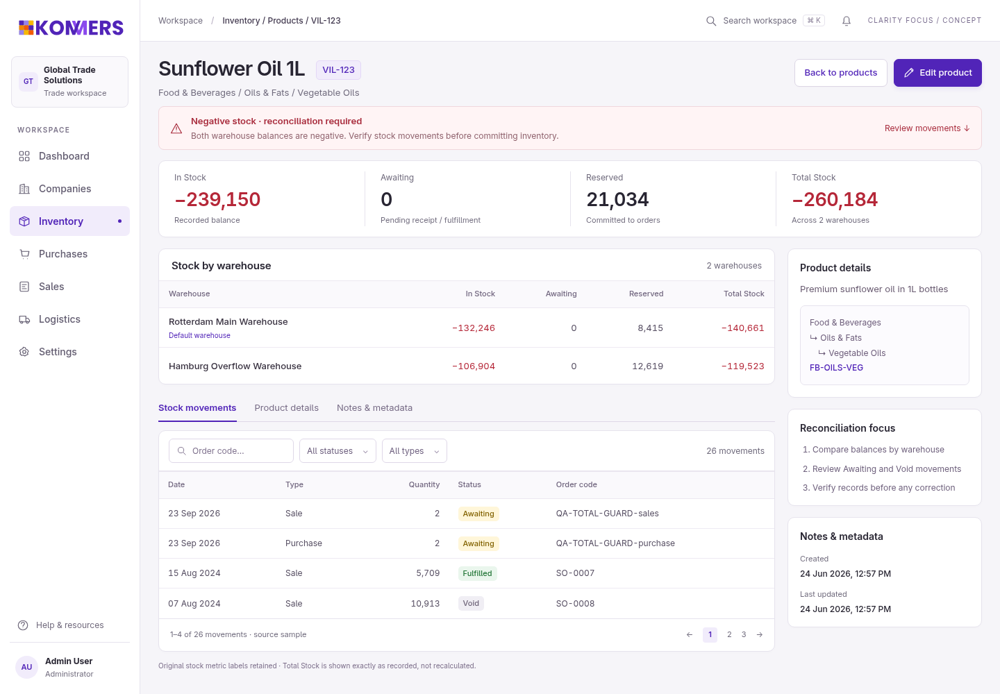

The same Clarity. More focus.
- Compact grouped metrics and an action-first priority queue.
- Crisp CRM tables with selected-record financial and stock previews.
- Read-first details, visible context and intentional editing.
Concept only, not implemented functionality. Local sources and assets; no app integration.